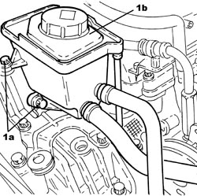
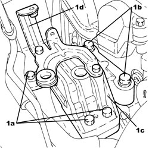
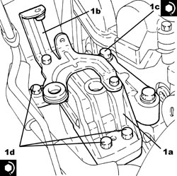
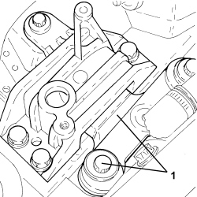
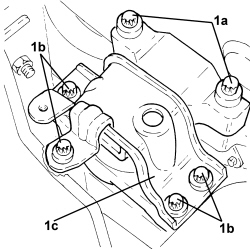
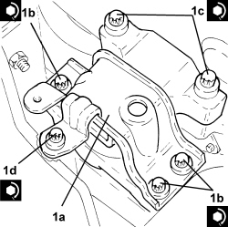

1008B10 POWER UNIT FRONT SUPPORT FLEXIBLE MOUNTING (TIMING SIDE) - REPLACE
- Path
- Procedures > 10 ENGINE > 1008 POWER UNIT SUPPORTS > 1008B POWER UNIT SUPPORT MOUNTINGS > 1008B10 POWER UNIT FRONT SUPPORT FLEXIBLE MOUNTING (TIMING SIDE) - REPLACE
- Kind
- repair procedure (removal / refitting; the operation number is the code)
- Applies to
- all engines; all production periods
- Interactive page
- https://sloeber94.github.io/elrnDB-aBrrSpdr/en/#/946001801
Applies to: engines: 2.2 JTS; all production periods
 Removing
Removing
 Refitting
RefittingOp. 1048A28 VACUUM AIR CIRCUIT RESONATOR PIPE - R+R
1. Undo bolts (1a) and move power assisted steering fluid reservoir (1b) sideways.

Applies to: engines: 2.2 JTS; all production periods
- Position a hydraulic jack under the engine crankcase sump.
1. Undo bolts (1a), (1b) and remove the flexible mounting for power unit timing side front support (1c) complete with power assisted steering fluid reservoir mounting bracket (1d).

Applies to: engines: 2.2 JTS; all production periods
Refitting
Removing1. Place timing side power unit front support flexible mounting (1a) in its housing complete with power assisted steering fluid reservoir mounting bracket (1b) and secure it by tightening bolts (1c) and (1d) to the recommended torque.
Component | Fastening | dia | Value (daNm) | Validity |
|---|---|---|---|---|
Timing side power unit rigid support flexible mounting | Bolt (to be replaced) | M12 | (rigid support side) 6.3 - 7.7 + 90° |
Component | Fastening | dia | Value (daNm) | Validity |
|---|---|---|---|---|
Timing side power unit rigid support flexible mounting | Bolt (to be replaced) | M12 | (bodyshell side) 6.3 - 7.7 + 90° |
Component | Fastening | dia | Value (daNm) | Validity |
|---|---|---|---|---|
Timing side flexible mounting to body | Bolt | M10 | 5.4 ÷ 6.6 |

Applies to: engines: 2.2 JTS; all production periods
- Remove the hydraulic jack positioned under the engine crankcase sump.
- Place the power assisted steering fluid reservoir back in its housing and secure it to the mounting bracket using the bolts.
Applies to: engines: 3.2 JTS; all production periods
Removing
Refitting1. Disconnect the electrical connection for the flow meter.
Description | Connector | |
|---|---|---|
1 | Air flow meter |
2. Loosen the bands (2a) and remove the chamber corrugated air hose (2b) complete with flow meter.

Applies to: engines: 3.2 JTS; all production periods
- Position an arm lift under the engine by the engine oil sump.
1. Undo the nuts fixing the flexible mounting to the bodyshell and the rigid support and remove it.

Applies to: engines: 3.2 JTS; all production periods
Refitting
Removing- Fit the flexible mounting and tighten the bolts to the recommended torque.
Component | Fastening | dia | Value (daNm) | Validity |
|---|---|---|---|---|
Timing side flexible mounting to rigid mount | Bolt (to be replaced) | M12 | 6.3 ÷ 7.7 + 90° |
Component | Fastening | dia | Value (daNm) | Validity |
|---|---|---|---|---|
Timing side flexible mounting to body | Bolt (to be replaced) | M12 | 6.3 ÷ 7.7 + 90° |
Component | Fastening | dia | Value (daNm) | Validity |
|---|---|---|---|---|
Timing side flexible mounting to body | Bolt | M10 | 5.4 ÷ 6.6 |
- Remove the arm lift.
- Place the corrugated hose complete with flow meter back in its housing and secure it using the bands.
- Connect the electrical connection to the flow meter.
Applies to: engines: 2.4 JTD 20v; all production periods
Removing
RefittingOp. 1016A10 SOUND-PROOFING COVER - R.R
Op. 1048A28 VACUUM AIR CIRCUIT RESONATOR PIPE - R+R
Op. 1048A41 HOSE FROM FLOW METER TO TURBOCHARGER - R.R.
Op. 1060G10 AIR FLOW METER - R.R.
1. Unscrew bolts (1a) and move aside bracket (1b) complete with power steering fluid reservoir (1c) without disconnecting the pipes.

Applies to: engines: 2.4 JTD 20v; all production periods
- Position a hydraulic jack under the engine crankcase sump.
1. Undo the bolts (1a), (1b), then remove the power unit timing side front support flexible mounting (1c).

Applies to: engines: 2.4 JTD 20v; all production periods
Refitting
Removing1. Place the timing side power unit front support flexible mounting (1a) in its housing and secure it tightening the bolts (1b), (1c) and (1d) to the recommended torque.
Component | Fastening | dia | Value (daNm) | Validity |
|---|---|---|---|---|
Timing side power unit rigid support flexible mounting | Bolt (to be replaced) | M12 | (bodyshell side) 6.3 - 7.7 + 90° |
Component | Fastening | dia | Value (daNm) | Validity |
|---|---|---|---|---|
Timing side power unit rigid support flexible mounting | Bolt (to be replaced) | M12 | (rigid support side) 6.3 - 7.7 + 90° |
Component | Fastening | dia | Value (daNm) | Validity |
|---|---|---|---|---|
Timing side power unit rigid support flexible mounting | Bolt | M10 | (bodyshell side) 5.4 - 6.6 |

Applies to: engines: 2.4 JTD 20v; all production periods
- Place the bracket complete with the power assisted steering fluid reservoir back in its housing and secure it using the bolts.
Op. 1060G10 AIR FLOW METER - R.R.
Op. 1048A41 HOSE FROM FLOW METER TO TURBOCHARGER - R.R.
Topics linked from this page (5)
- 1016A10 SOUND-PROOFING COVER - R.R
- 1048A28 VACUUM AIR CIRCUIT RESONATOR PIPE - R+R
- 1048A41 HOSE FROM FLOW METER TO TURBOCHARGER - R.R.
- 1060G10 AIR FLOW METER - R.R.
- K041 AIR FLOW METER
Topics that link to this page (16)
- 1008A46 POWER UNIT RIGID SUPPORT - TIMING SIDE - R.R.
- 1020D18 FRONT CRANKSHAFT COVER OIL SEAL - R.R.
- 1032C33 TIMING SYSTEM FIXED HYDRAULIC TENSIONER - R R
- 1032C41 TIMING SYSTEM FIXED CHAIN TENSIONER PAD R R
- 1032D12 TIMING SYSTEM PROTECTIVE COVER(S) - R + R
- 1056F46 PHASE TRANSFORMER SOLENOID, LEFT CYLINDER HEAD INTAKE OR EXHAUST - R.R.
- 1056F47 PHASE TRANSFORMER SOLENOID, RIGHT CYLINDER HEAD INTAKE OR EXHAUST - R.R.
- 1056F55 LEFT CYLINDER HEAD INTAKE OR EXHAUST CAM ANGLE SENSOR - R.R.
- 1076A72 HEAT SHIELD FOR RIGHT CATALYTIC PRECONVERTER - R.R.
- 1088C10 WATER PUMP - R + R
- 1088C22 WATER PUMP PULLEY - R.R.
- 1088D24 WATER PUMP RIGID COOLANT INLET PIPE - R.R.
- 1092A10 CRANKSHAFT PULLEY - R + R
- 1092G10 SINGLE ENGINE BELT - R.R
- 1092G14 ENGINE COMPONENT SINGLE BELT MOVING TENSIONER - R + R
- 3340B41 RIGID PIPE FROM INTERMEDIATE CONNECTOR TO RIGHT FRONT BRAKE - R.R.